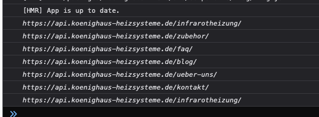

Hey everyone.
When I started my project this didnt exist yet so I had it working in the old way. Now I am trying to change it and use the component but for some reason it is not replacing the absolute urls to relative so any link i click on my menus for example, makes a full http request.
I suspect it is not replacing the correctly due to my settings and the url’s placed there and I tried any combination I could think of but couldnt make it work. So here is my component:
import React from "react";
import { connect, styled, useConnect } from "frontity";
import Link from "@frontity/components/link";
const KhLink = ({
children,
...props
}) => {
const {state, libraries} = useConnect()
const StyledAnchor = styled(Link)`
color: ${(props) => props.color};
font-weight: ${(props) => props.fontWeight || "bold"};
position: relative;
font-family: ${(props) => props.fontFamily};
font-size: ${(props) => props.fontSize};
&:visited {
color: ${(props) => props.color};
}
`;
const onClick = (event) => {
if (state.shop.sidebarIsOpen) {
state.shop.sidebarIsOpen = false;
}
};
return (
<StyledAnchor
fontFamily={libraries.theme.fonts[props.fontFamily] || libraries.theme.fonts.normal}
color={props.color || "white"}
fontSize={props.fontSize || "14px"}
{...props}
onClick={onClick}
>
{children}
</StyledAnchor>
);
};
export default connect(KhLink, { injectProps: false });
It is basically the same as the Link component in mars-theme, just with some extra styling. It is important to note that i tested the same with just the plain Link, component from frontity and it had the same issue. That is why I suspect it has something to do with the settings file.
In my frontity settings i have the following:
const settings = {
name: "koenighaus-webshop",
state: {
frontity: {
url: "https://neu.koenighaus-heizsysteme.de",
title: "Koenighaus Heizsysteme",
},
},
packages: [
{
name: "@frontity/koenighaus-theme",
},
{
name: "@frontity/wp-source",
state: {
source: {
api: "https://api.koenighaus-heizsysteme.de/wp-json/",
params: {
per_page: 9,
},
homepage: "/home/",
postEndpoint: "product",
postTypes: [
{
type: "product",
endpoint: "product",
archive: "/webshop",
},
],
taxonomies: [
{
taxonomy: "product_cat",
endpoint: "product_cat",
postTypeEndpoint: "product",
},
],
},
},
},
"@frontity/tiny-router",
"@frontity/html2react",
"@frontity/head-tags",
"woocommerce-shop",
],
};
export default settings;
And finally here is a screenshot of the url’s that are in my main menu. The urls are comping as absolute urls returned from the menu endpoint.

This screenshot shows each URL, logged into the console by the link component.
Issue persists both on live and on localhost. Here is a link from the dev/live site: https://koenighaus-webshop.donkoko.vercel.app/. If you hover the links in the main menu you will see that they are still showing the full absolute url to the API.

 :
: 
 I’d be happy to guide you and you’re welcome to ping me with questions
I’d be happy to guide you and you’re welcome to ping me with questions